Cześć! Nazywam się Gutek! 👋
Jestem niezależnym deweloperem, który tworzy proste, praktyczne i bezpłatne aplikacje mobilne ułatwiające codzienne życie. Projektuję narzędzia do organizacji codziennych zadań, wyznaczania rutyn oraz wspomagania zdrowia.
Jeden z moich flagowych projektów — MedOpiekun — powstał z bardzo osobistej potrzeby, gdy szukałem prostego rozwiązania pomagającego w codziennej opiece nad moją babcią. Z czasem rozwinąłem tę aplikację i udostępniłem ją wszystkim, którzy potrzebują niezawodnego asystenta medycznego do przypominania o lekach czy wizytach.
Tworzę oprogramowanie z myślą o prywatności, przejrzystości i wygodzie użytkowników. Poniżej znajdziesz linki, gdzie możesz śledzić moje projekty i się ze mną skontaktować.
📧 Kontakt e-mail: gutek.developer@gmail.com
Pozdrawiam ❤️
Gutek Developer

Moje Aplikacje
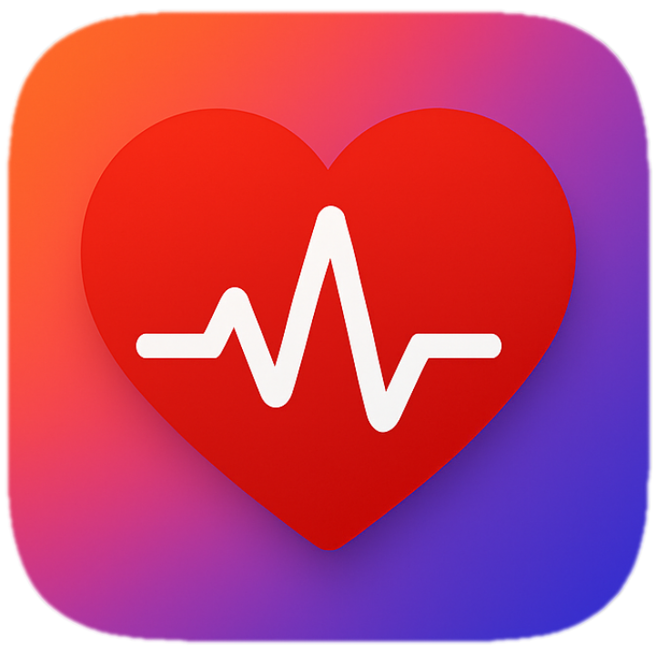
MedOpiekun
Aplikacja ułatwiająca zarządzanie lekami, pomiarami zdrowotnymi i wizytami u lekarza.
Dostępna w Google Play Zobacz szczegóły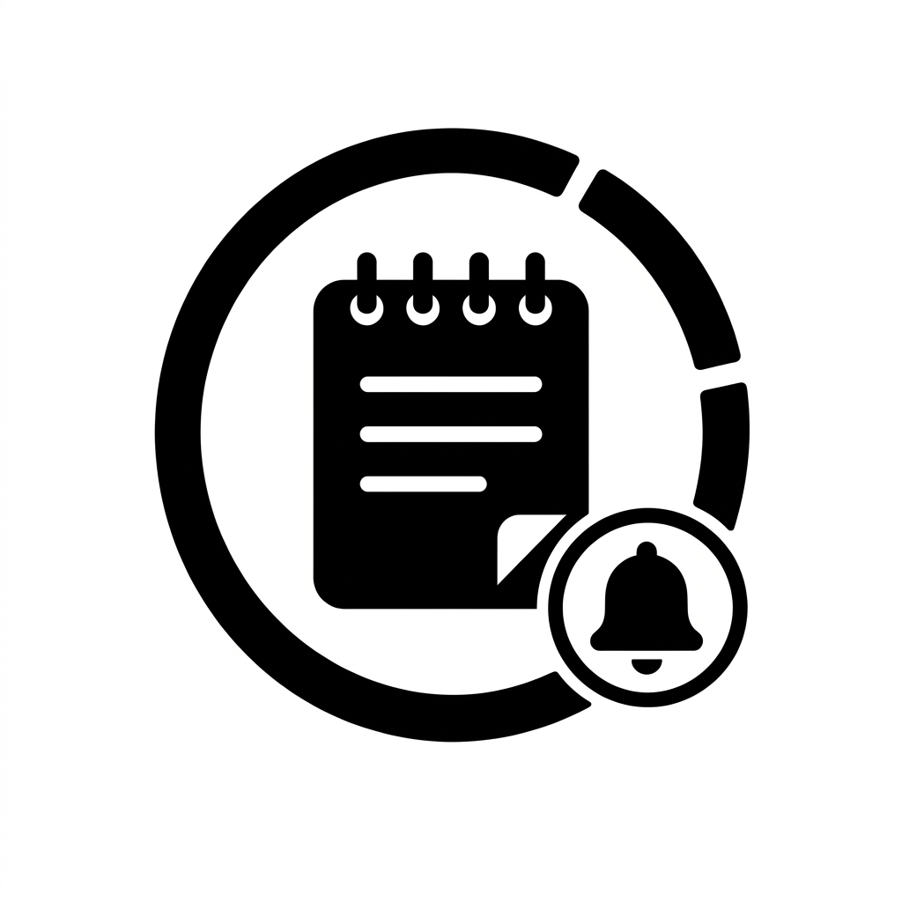
ZapiszTo
Twoje centrum szybkich notatek, zadań i organizacji dnia.
W trakcie tworzenia Dowiedz się więcejTwoje zdrowie pod pełną kontrolą
MedOpiekun to nowoczesna aplikacja pomagająca w zarządzaniu lekami, wizytami i badaniami. Wszystko w jednym miejscu — zawsze pod ręką.
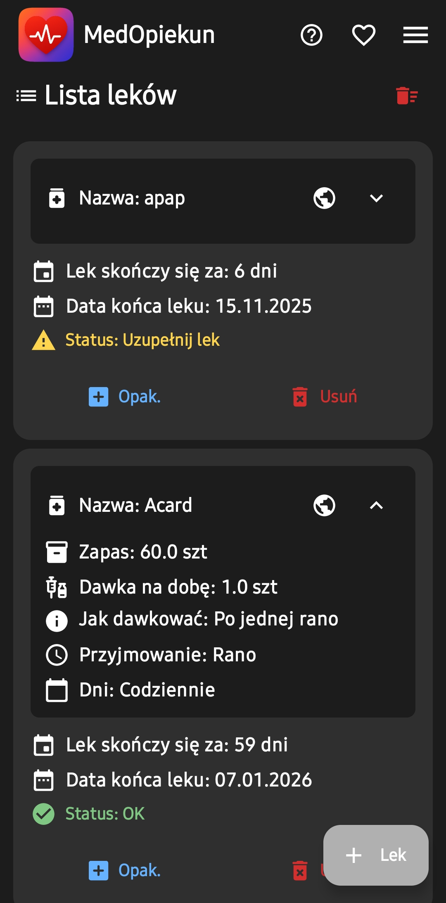
💊 MedOpiekun — Szczegóły i instrukcje
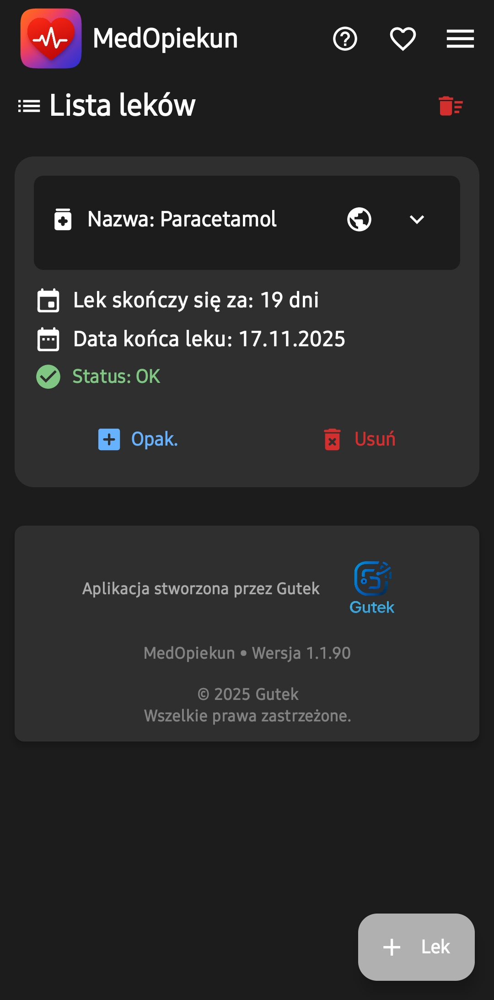
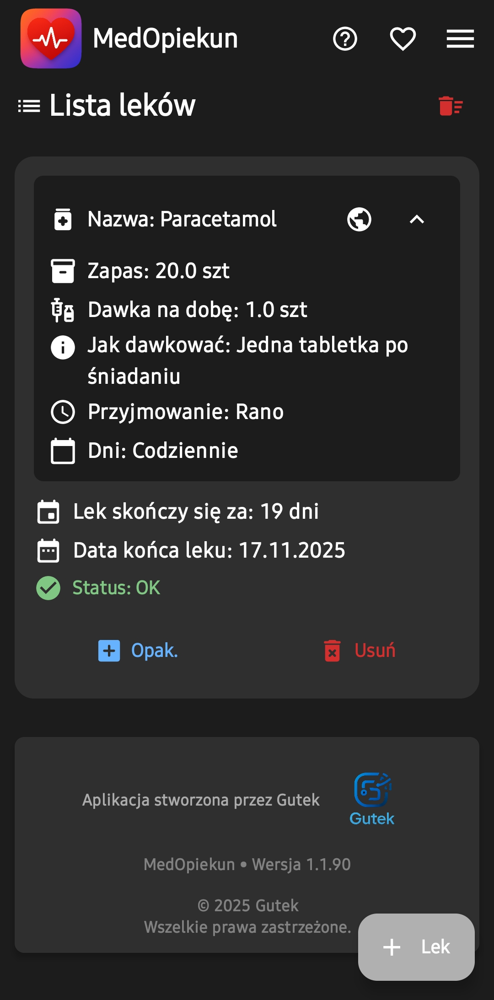
Jak dodać lek
Na ekranie Lista leków naciśnij przycisk +Lek. Zostaniesz przeniesiony do formularza dodawania leku.
W formularzu:
- Wpisz nazwę leku i wybierz jego typ: Tabletka, Maść, Krople lub Syrop.
- Wpisz łączną dzienną dawkę leku (np. 2 tabletki dziennie).
- Opcjonalnie dodaj informację o sposobie dawkowania.
- Wpisz obecną ilość leku oraz ilość w opakowaniu. Po zakupie nowego opakowania kliknij +opak., aby zaktualizować stan leku.
- Zaznacz dni przyjmowania leku. Aplikacja odejmuje dzienną dawkę tylko w zaznaczonych dniach.
- Wybierz pory dnia, w których bierzesz lek. Standardowe: Rano, Popołudniu, Wieczorem, Na noc. Można dodać 4 dodatkowe pory.
- Godziny i nazwy pór można zmieniać w sekcji "Godziny powiadomień o lekach". Pamiętaj, aby po zmianie kliknąć Zapisz.
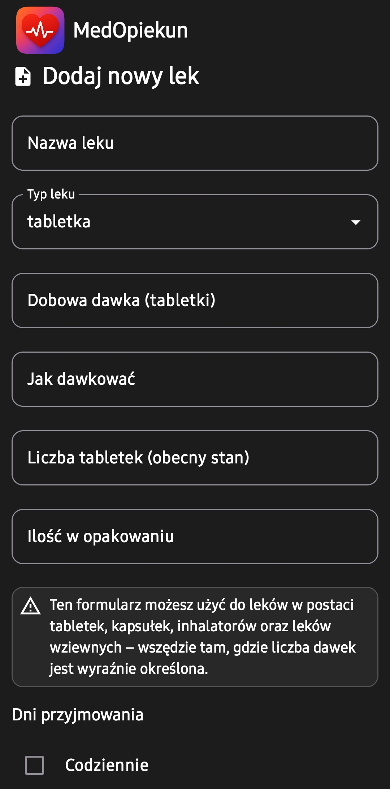
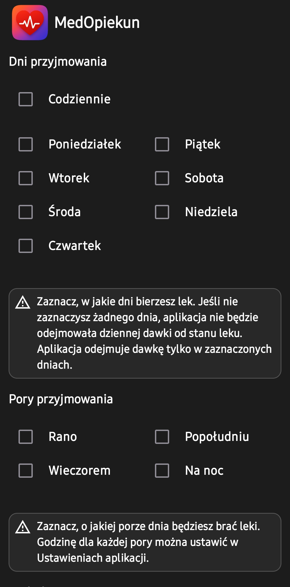
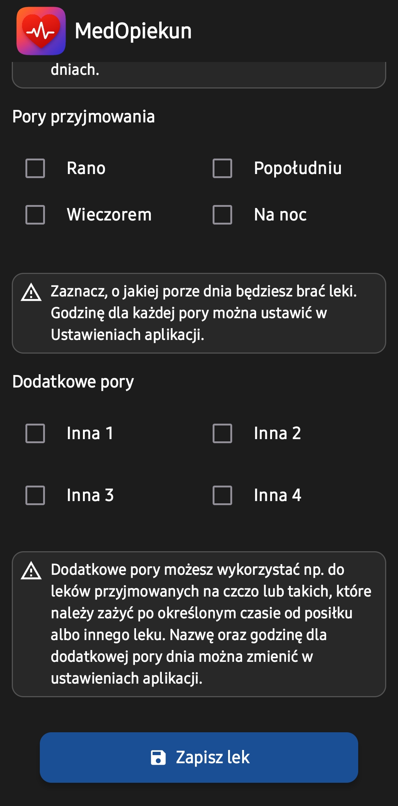
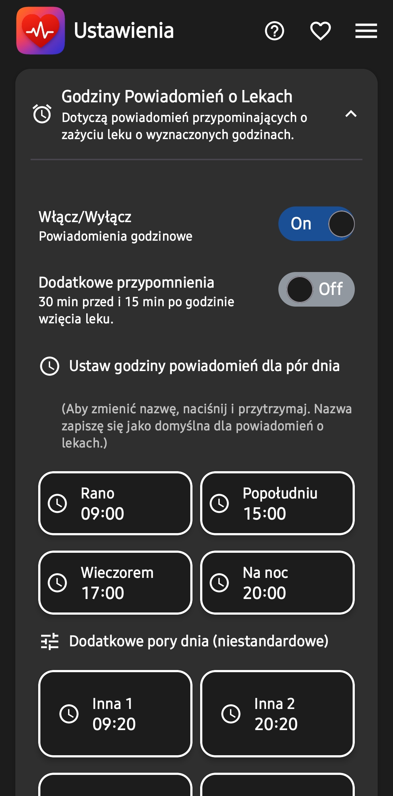
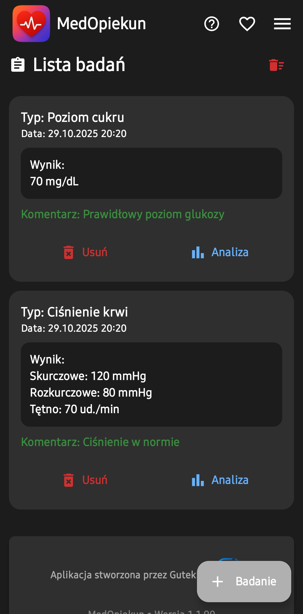
Jak dodać badanie
Na ekranie Lista Badań kliknij przycisk w prawym dolnym rogu +Badanie. Zostaniesz przeniesiony do formularza dodawania badania.
Do wyboru są następujące typy badań:
- Ciśnienie krwi
- Poziom cukru
- Saturacja
- Temperatura
Po wpisaniu danych kliknij przycisk Zapisz, a dane zostaną dodane do bazy i pojawią się na ekranie z listą badań.
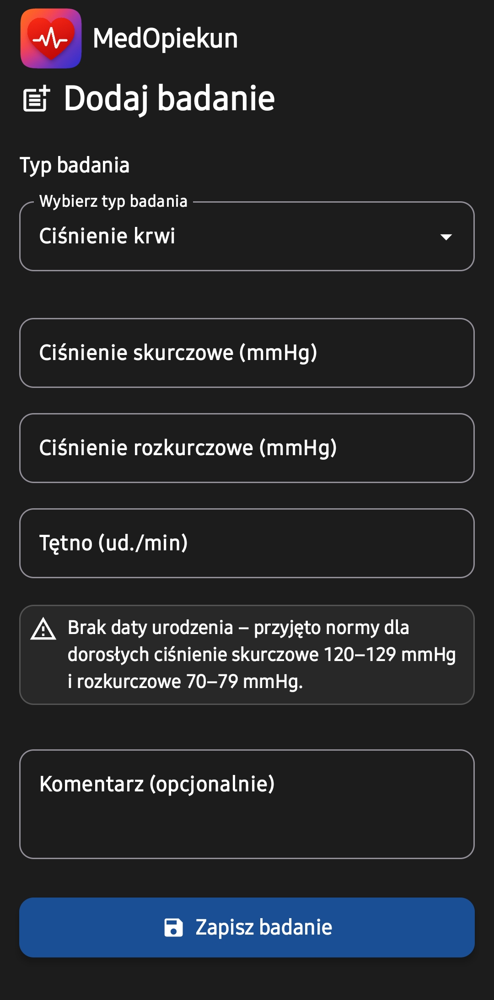
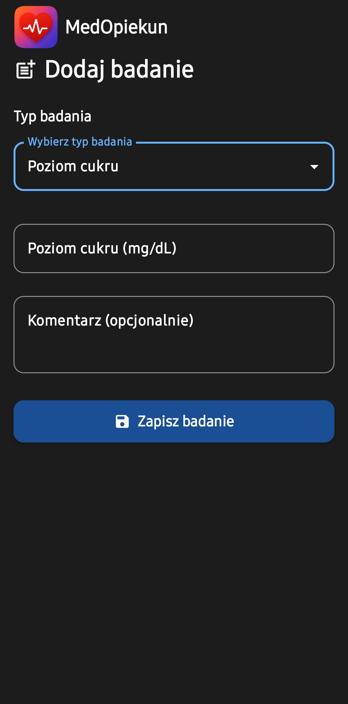
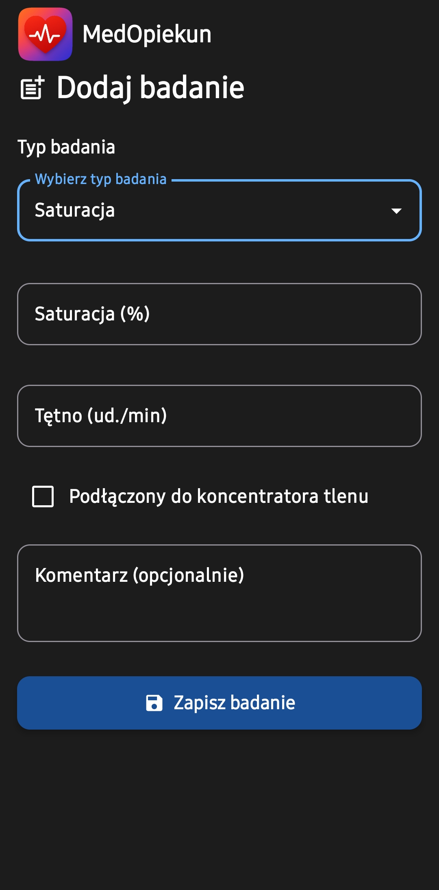
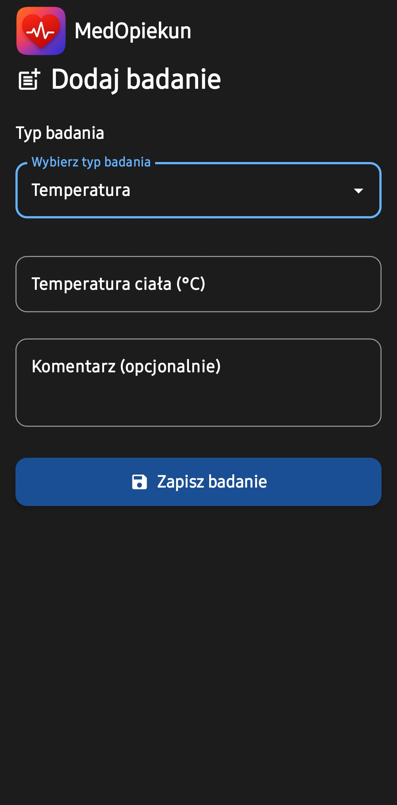
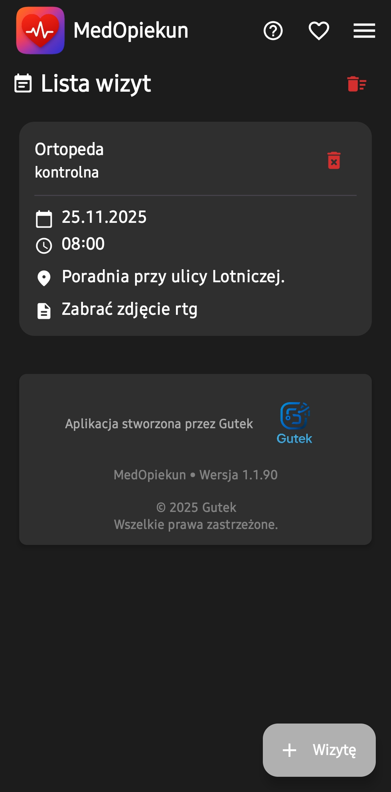
Jak dodać wizytę
Na ekranie Lista wizyt kliknij przycisk w prawym dolnym rogu +Wizytę. Zostaniesz przeniesiony do formularza dodawania wizyty.
W formularzu należy:
- Wpisać do jakiego lekarza, specjalisty lub rehabilitanta jest wizyta.
- Wpisać rodzaj wizyty.
- Ustawić godzinę i datę wizyty.
- Opcjonalnie dodać miejsce wizyty i dodatkowe informacje.
Po kliknięciu Zapisz wizyta zostanie zapisana do bazy i pojawi się na ekranie Lista wizyt.
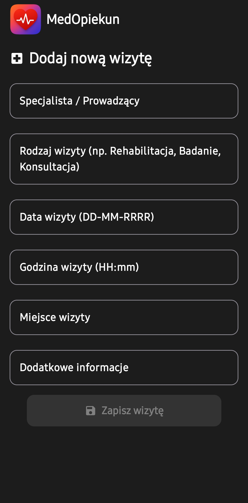
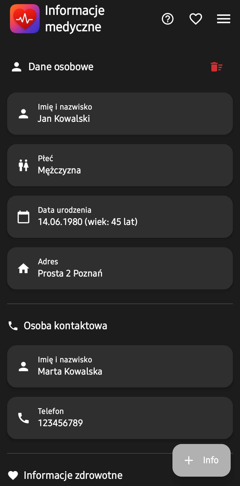
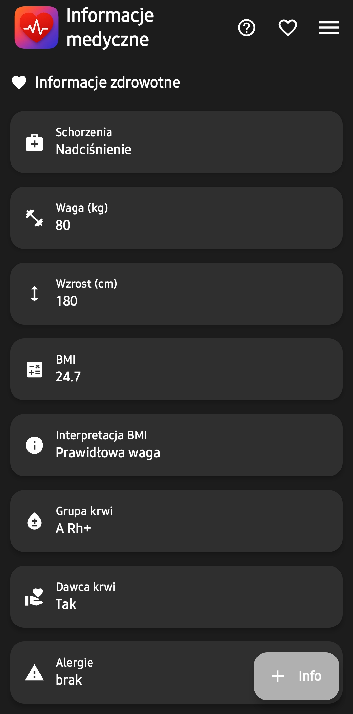
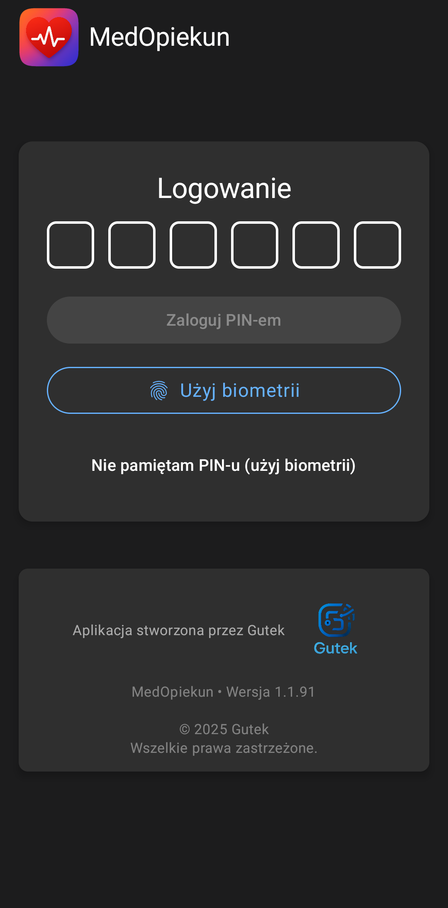
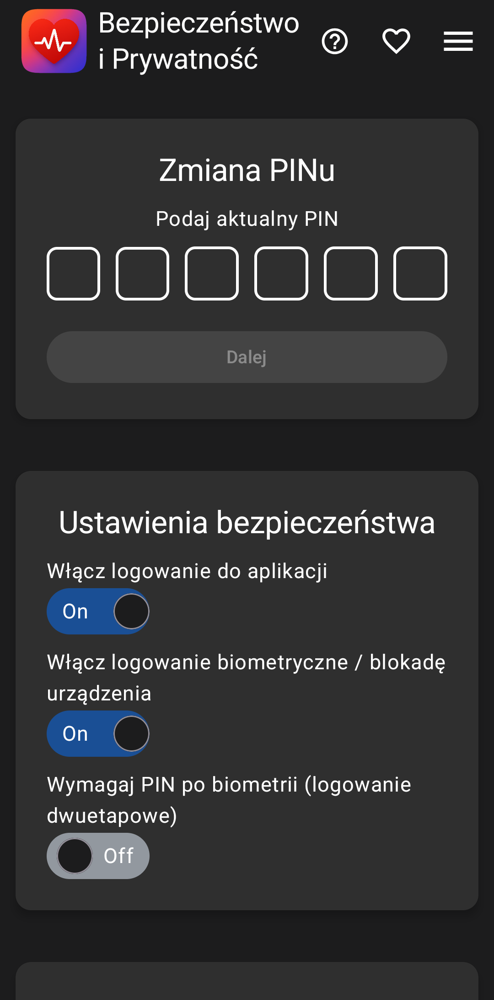
Dowiedz się więcej o ustawieniach i funkcjach aplikacji
Jeśli chcesz dowiedzieć się więcej o ustawieniach i innych możliwościach aplikacji, zapraszam do obejrzenia tego filmu:
📝 ZapiszTo — Nadchodząca aplikacja
ZapiszTo to twój nowy, podręczny asystent do organizacji zadań, planowania dnia oraz tworzenia szybkich notatek.
Aplikacja jest obecnie w fazie aktywnego rozwoju. Została zaprojektowana z myślą o prostocie, szybkości działania i pełnej prywatności.
Śledź profil, aby być na bieżąco z informacjami o premierze!